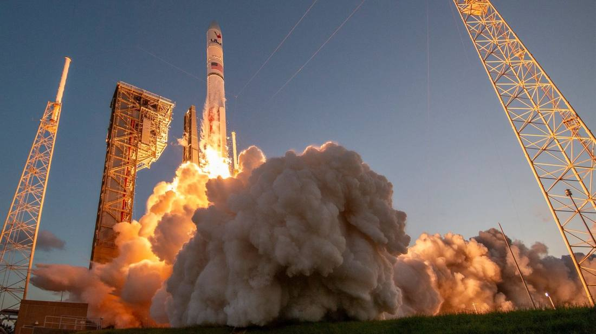
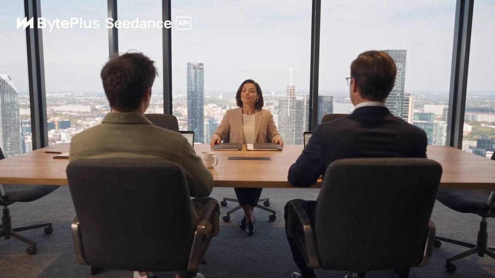
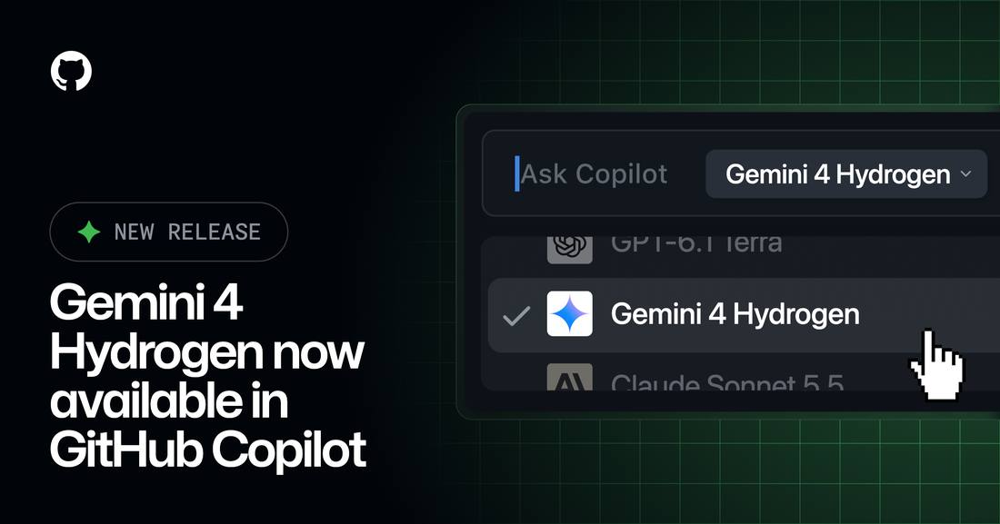
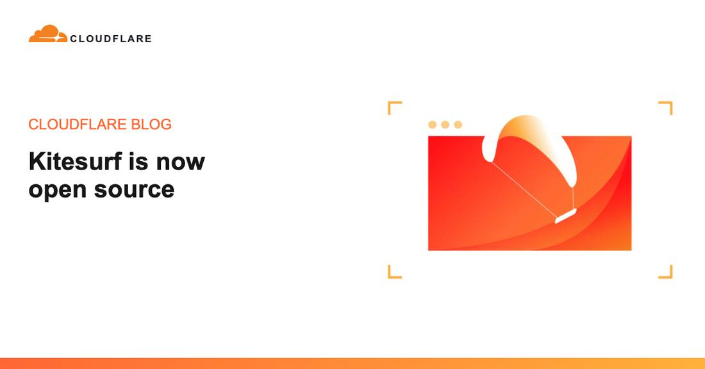
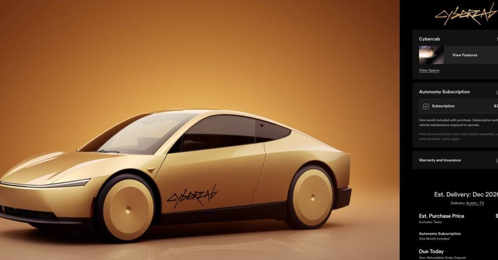
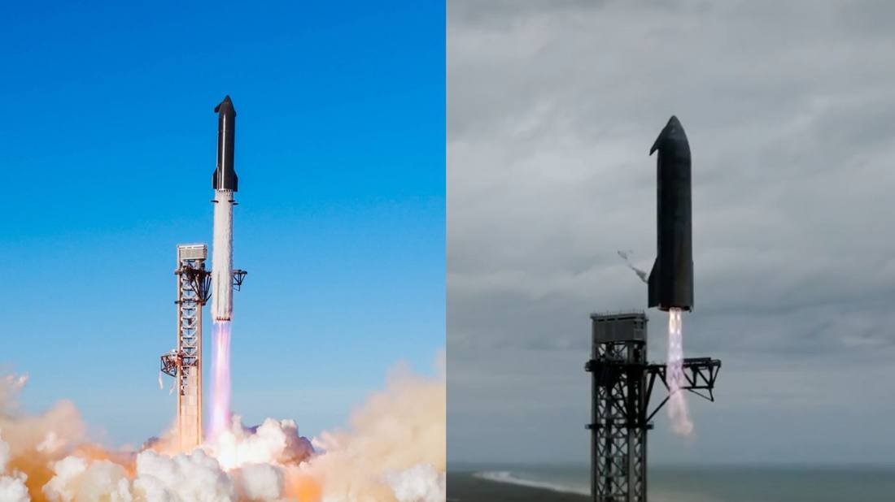

Facts first
Reporting and analysis are kept apart on every page. Sources and uncertainty are stated, not buried.

ULA's Vulcan rocket suffered an anomaly about 10 minutes into its November 15 return-to-flight mission and failed to deliver 40 Amazon Leo broadband satellites to orbit. The cause is not yet known; NASA has offered to help investigate, and Amazon's plan to start Leo service before year-end now depends on how long Vulcan stays grounded.

Seedance 2.5 Flash API Goes Live, ByteDance's Faster Video Model at a Third LessByteDance's Seedance 2.5 Flash API opened November 15: the faster, cheaper video model is now live for developers on Volcano Engine's Ark platform, with BytePlus's international ModelArk opening the same day. At $0.152 per second of 720p video, about 34 percent below the flagship Seedance 2.5, it caps out at 720p and 30-second clips.
GitHub Copilot Retires Six Models on December 14, Kimi K3's Replacement Still UnnamedGitHub announced on November 13, 2026 that six models will be deprecated across all GitHub Copilot experiences on December 14, 2026: Claude Fable 5, Claude Haiku 4.5, Gemini 3.8 Flash, Gemini 4 Argon, Grok 4.6 and Kimi K3. Suggested replacements are named for five; Kimi K3's successor is still to be announced, and Haiku 4.5 stays for individual subscribers on annual plans.
Cloudflare Open-Sources Kitesurf, Its Chromium-Free Browser for AI AgentsCloudflare open-sourced Kitesurf, its stateless browser engine for AI agents, on GitHub under the Apache 2.0 license on November 13, 2026. It runs entirely on Cloudflare Workers with no Chromium container, speaks the Chrome DevTools Protocol, and can be self-hosted on a Workers Paid plan.| WORLD & POLICY | 18 |
| MARKETS & INDUSTRY | 115 |
| AI FRONTIER | 212 |
| ROBOTICS & AI | 29 |
| WEB3 INFRASTRUCTURE | 4 |
| RESEARCH & SCIENCE | 6 |

Tesla Opens Cybercab Orders at $29,990, but the Car Won't Move Without a $299 Monthly SubscriptionTesla has invited select customers to buy the Cybercab for personal use at $29,990 before taxes, with a $1,000 non-refundable deposit and estimated delivery of December 2026 in Austin, Texas. The car will not operate without a $299-a-month Autonomy Subscription, pre-checked on the order page with one month included, and it only drives itself inside Tesla's Robotaxi service areas in eight Texas and Florida cities. The order terms prohibit commercial use, and the National Highway Traffic Safety Administration has not ruled on its review of the car with no brake pedal. Confirmed by Tesla's official Robotaxi account on X and Electrek, read in full.
Mechazilla Catches Ship 42: First-Ever Tower Catch of a Starship Upper StageSpaceX caught Ship 42, the Starship upper stage, with the Mechazilla tower arms at Orbital Launch Pad 2, Starbase, at 21:20:03 UTC on November 14, 2026 (T+22:32:28), the first tower catch of a Starship upper stage and the first successful upright landing of an upper stage rocket after reaching orbit. The mission lasted 22 hours, 32 minutes, 32 seconds, the longest Starship flight, after about 14 orbits at roughly 275 km and the deployment of all 26 Starlink V3 satellites. Booster 22 aborted its tower catch on Friday after a guidance, navigation and control issue and low fuel, then broke apart offshore, so full two-stage recovery was not achieved. Confirmed by Barron's, the Starlust live blog, and the Wikipedia flight timeline citing SpaceX. FAA Shutdown Traced to Routers in Arkansas and Texas as L3Harris RespondsUpdate to flashes 358, 359 and 365: government officials told Reuters on Saturday, November 14, 2026, that the nationwide aviation shutdown may have been the fault of a single router installed by government contractor L3Harris, and that there may have been problems with routers installed in both Arkansas and Texas. The overload hit communications at 17 of the FAA's 22 en route centers, and the FAA ordered the ground stop because it could not identify a root cause. The routers being replaced are about 25 years old and were supposed to have been replaced in 2006, while the FAA spends $1 billion a year maintaining its copper wire system. L3Harris has now responded, saying it supports the FAA investigation and has completed more than 70% of the copper-to-fiber conversion. More than 20,000 flights have been disrupted since Friday. The exact cause has not been determined and no formal root-cause finding has been published.FAA Saturday Briefing Points to Faulty Router in L3Harris Maintenance WorkUpdate to flashes 358 and 359: Transportation Secretary Sean Duffy said at a U.S. Department of Transportation press conference on Saturday, November 14, 2026, that a faulty router might have caused the communications outage that forced the Federal Aviation Administration to halt all departing flights nationwide on Friday. The outage occurred during routine FAA telecommunications maintenance at a remote facility, where aging copper communications lines were being replaced with fiber-optic service by contractor L3Harris. During the upgrade, a router began flooding the FAA network with traffic, generating more than 1,000 connection attempts every four to five seconds. Investigators have not yet determined the exact cause of the router failure, including whether it stemmed from human error, an installation mistake, or a problem with the equipment itself. Officials do not believe the outage was caused by a cyberattack or other malicious activity. The stop lasted more than four hours, was lifted at 8:15 p.m. Eastern on Friday, and was only the second nationwide halt since the September 11, 2001, attacks. FlightAware counted more than 9,100 flights canceled and more than 24,500 delayed on Friday, and 3,568 cancellations by 8:17 a.m. Eastern on Saturday.AI FRONTIERCursor Traces Its October Breach to a Leaked Fireworks KeyCursor published the findings of its two-week investigation into its October security incident on November 13, 2026, tracing the breach to an access key it had issued to Fireworks AI, which Cursor says was exposed by the vendor. An attacker used the key to copy coding agent traces from a shared read-only bucket; a small number of traces contained unredacted credentials, exposing API credentials for fewer than 0.01% of customers and traces for fewer than 0.05% of users. From there the attacker reached Cursor's internal tools and, on October 29, placed malicious copies of Anthropic's Claude Code extension, versions 2.1.312 and 2.1.313, on the cache serving the Cursor VS Code extension marketplace. At most 5,000 users potentially received the SSH-backdoored build during the roughly 11 hours it was live. Anthropic did not publish the copies, the incident was not a vulnerability in Anthropic's product, and Open VSX never hosted the malware. Cursor says the incident is contained, with the last attacker activity on November 1 blocked, and has moved all inference off Fireworks, rotated all credentials, rebuilt the marketplace, and redeployed production.DeepMind Opens the Datasets Behind Its AI Weather ModelsGoogle DeepMind released two foundational Earth-science datasets on November 13, 2026: SatWeave and PARDIG, the observational backbones behind its recently released WeatherNext 3 forecasting model. SatWeave merges geostationary satellite imagery into a global mosaic across 17 visible, water-vapour and infrared channels, updating hourly with a historical archive spanning more than a decade. PARDIG is an AI-based global precipitation dataset at 15-minute intervals and roughly 10-kilometre resolution that improves hourly precipitation detection skill over NASA's IMERG-Final by more than 30% on light-to-moderate precipitation, validated against three continental radar networks and more than 36,000 weather stations. Both datasets are openly available on Google Cloud Storage, with PARDIG also in Google Earth Engine. Separately, the UK Met Office and Google signed a multi-year agreement for Met Office scientists to assess WeatherNext 3 in experimental sandboxes.
FAA Shutdown Traced to Routers in Arkansas and Texas as L3Harris RespondsUpdate to flashes 358, 359 and 365: government officials told Reuters on Saturday, November 14, 2026, that the nationwide aviation shutdown may have been the fault of a single router installed by government contractor L3Harris, and that there may have been problems with routers installed in both Arkansas and Texas. The overload hit communications at 17 of the FAA's 22 en route centers, and the FAA ordered the ground stop because it could not identify a root cause. The routers being replaced are about 25 years old and were supposed to have been replaced in 2006, while the FAA spends $1 billion a year maintaining its copper wire system. L3Harris has now responded, saying it supports the FAA investigation and has completed more than 70% of the copper-to-fiber conversion. More than 20,000 flights have been disrupted since Friday. The exact cause has not been determined and no formal root-cause finding has been published.FAA Saturday Briefing Points to Faulty Router in L3Harris Maintenance WorkUpdate to flashes 358 and 359: Transportation Secretary Sean Duffy said at a U.S. Department of Transportation press conference on Saturday, November 14, 2026, that a faulty router might have caused the communications outage that forced the Federal Aviation Administration to halt all departing flights nationwide on Friday. The outage occurred during routine FAA telecommunications maintenance at a remote facility, where aging copper communications lines were being replaced with fiber-optic service by contractor L3Harris. During the upgrade, a router began flooding the FAA network with traffic, generating more than 1,000 connection attempts every four to five seconds. Investigators have not yet determined the exact cause of the router failure, including whether it stemmed from human error, an installation mistake, or a problem with the equipment itself. Officials do not believe the outage was caused by a cyberattack or other malicious activity. The stop lasted more than four hours, was lifted at 8:15 p.m. Eastern on Friday, and was only the second nationwide halt since the September 11, 2001, attacks. FlightAware counted more than 9,100 flights canceled and more than 24,500 delayed on Friday, and 3,568 cancellations by 8:17 a.m. Eastern on Saturday.AI FRONTIERCursor Traces Its October Breach to a Leaked Fireworks KeyCursor published the findings of its two-week investigation into its October security incident on November 13, 2026, tracing the breach to an access key it had issued to Fireworks AI, which Cursor says was exposed by the vendor. An attacker used the key to copy coding agent traces from a shared read-only bucket; a small number of traces contained unredacted credentials, exposing API credentials for fewer than 0.01% of customers and traces for fewer than 0.05% of users. From there the attacker reached Cursor's internal tools and, on October 29, placed malicious copies of Anthropic's Claude Code extension, versions 2.1.312 and 2.1.313, on the cache serving the Cursor VS Code extension marketplace. At most 5,000 users potentially received the SSH-backdoored build during the roughly 11 hours it was live. Anthropic did not publish the copies, the incident was not a vulnerability in Anthropic's product, and Open VSX never hosted the malware. Cursor says the incident is contained, with the last attacker activity on November 1 blocked, and has moved all inference off Fireworks, rotated all credentials, rebuilt the marketplace, and redeployed production.DeepMind Opens the Datasets Behind Its AI Weather ModelsGoogle DeepMind released two foundational Earth-science datasets on November 13, 2026: SatWeave and PARDIG, the observational backbones behind its recently released WeatherNext 3 forecasting model. SatWeave merges geostationary satellite imagery into a global mosaic across 17 visible, water-vapour and infrared channels, updating hourly with a historical archive spanning more than a decade. PARDIG is an AI-based global precipitation dataset at 15-minute intervals and roughly 10-kilometre resolution that improves hourly precipitation detection skill over NASA's IMERG-Final by more than 30% on light-to-moderate precipitation, validated against three continental radar networks and more than 36,000 weather stations. Both datasets are openly available on Google Cloud Storage, with PARDIG also in Google Earth Engine. Separately, the UK Met Office and Google signed a multi-year agreement for Met Office scientists to assess WeatherNext 3 in experimental sandboxes.Policy, geopolitics and macro forces — the events that move the map.
OPEN DESK → · 18 REPORTS02Capital, deals and industry structure, with every number sourced.
OPEN DESK → · 115 REPORTS03Models, agents and compute — verified against primary sources before publication.
OPEN DESK → · 212 REPORTS04Humanoids, embodied AI and automation — real deployments, not demos.
OPEN DESK → · 29 REPORTS05Blockchain infrastructure and industry facts. No investment advice.
OPEN DESK → · 4 REPORTS06Papers, labs and frontier science, with the limits of each claim stated.
OPEN DESK → · 6 REPORTSOne sponsor slot per cycle across the briefing and the homepage. Pricing steps up with real traffic. Audience numbers are never inflated.
Reporting and analysis are kept apart on every page. Sources and uncertainty are stated, not buried.
Key facts link back to the publishing institution and the original document, with page screenshots on file.
Each report carries a screenshot of its primary source. One click takes you to the original.
Events, timelines and entities are linked, so a headline becomes a position in a larger picture.
We monitor official announcements, filings, wire reporting and front-line social signals, then merge duplicate coverage of the same event.
Social posts are leads, never sources. Each event is confirmed against its primary source and a second independent report before publication.
Background, timelines and related entities are attached to every event, and follow-ups are published as updates to the same record.